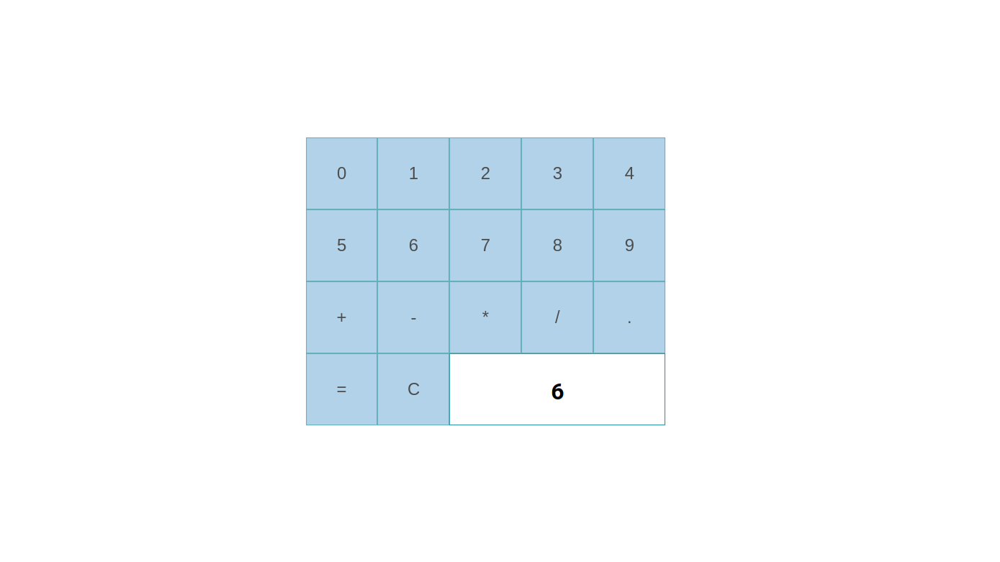

- Pomodoro
- Pomodoro, una implementación de un timer de sesiones de trabajo con pausas.
- ReactJS

- Markup
- Markup, un visualizador de texto editado con markup.
- ReactJS

- Gifos
- Un buscador de gif con la posibilidad de crear y subir uno propio.
- JS puro

- Calculadora
- Una calculadora sencilla.
- ReactJS
- 